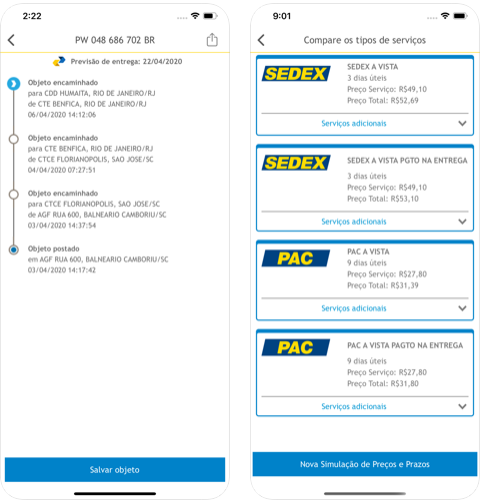
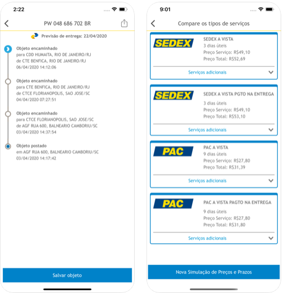

Correios

Sobre
Respositório da disciplina Requisitos de Software, com o objetivo de levantar os requisitos funcionais e não funcionais do aplicativo dos Correios (PlayStore, AppStore), assim como levantar a pré-rastreablidade, elicitação, modelagem, análise e pós-rastreabilidade e outros artefatos necessários para a disciplina.
Sobre o aplicativo dos Correios
Com o objetivo de fornecer soluções acessíveis, confiáveis e cada vez mais adaptadas ao perfil dos consumidores, os Correios aprimoraram a interface de seu aplicativo que oferece as seguintes facilidades:
• Realizar a Pré-Postagem de sua encomenda, obtendo o número de identificação que deverá ser apresentado em qualquer agência dos Correios, onde será finalizado o atendimento;
• Buscar as agências mais próximas de sua localização em um raio de até 10 km;
• Simular preços e prazos para cada tipo de postagem;
• Incluir e salvar dados dos objetos informando o código de rastreamento;
• Visualizar a data prevista da entrega de sua encomenda;
• Acompanhar o rastreamento de seu objeto através de recebimento de notificação;
• Acessar o serviço de Minhas Mensagens por meio da qual os Usuários (Destinatários) poderão consultar suas mensagens de caráter formal/oficial, enviadas por Emissores (Remetentes).
 

Contribuidores
| Matrícula | Nome | Git | |
|---|---|---|---|
| 180119818 | Felipe Boccardi Silva Agustini | felipeb.agustini@gmail.com | Fealps |
| 170144259 | Gustavo Nogueira Rodrigues | gustavonr.13@gmail.com | Gustavo-Nogueira |
| 160016169 | Nicalo Ribeiro Dourado Araujo | nicalo63@gmail.com | nicaloribeiro |